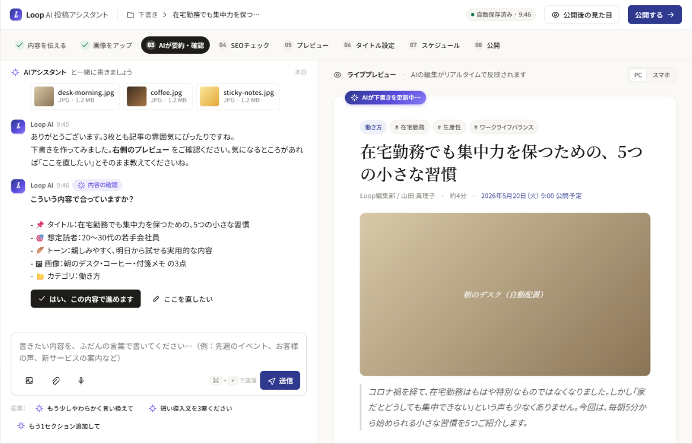
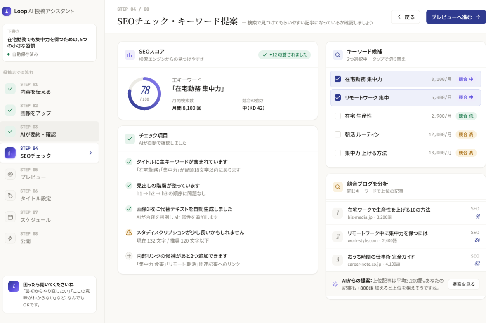

Computer Vision / OCR
商品画像認識、バーコードレスPOS連携、図面・帳票OCR。Human-in-the-loopで誤認識を担保。
Web制作・AIチャットボット・DX/ML実装まで、
米国大学出身の少数精鋭チームが段階的に伴走します。
Web制作・AIチャットボット・DX/ML実装まで、御社の業務をヒアリングし、米国大学出身の少数精鋭チームが段階的に伴走します。
基盤（セキュリティ・運用・内製化）の上に、Web → AI → DX の3レイヤーを段階的に積む構造。
単発の発注ではなく「会社の能力として残る」のがNORTIQの設計思想です。
業務にAIを組み込む
¥500,000 〜商品画像認識、バーコードレスPOS連携、図面・帳票OCR。Human-in-the-loopで誤認識を担保。
社内文書を横断検索し根拠付きで回答。属人化したノウハウをナレッジに転換。
業務プロセスに沿った自律エージェント。M365 / Workspace / Slack / Notion 連携。
「毎朝の売上を要約してメール」など、定型業務をAIが定期実行。
継続発信を自動化
¥100,000 〜質問するだけで記事が書ける投稿ツール。「WordPress 更新が止まる」を解決。8ステップUIで誤投稿防止 + 競合分析内蔵。
AI投稿ツール × SEO内部対策 × 業界キーワード設計を一体運用。「書く時間が取れない」を構造で解決。
集客と問い合わせの土台
¥300,000 〜医療・不動産・建築・人材・小売など、業種ごとに最適化された記事構成テンプレ。
表示速度・操作性・安定性すべてGood担保。集客と問い合わせ獲得を前提とした実装基準。
京都の骨董店の越境ECなど、海外向け設計・決済・配送までのノウハウ。
すべてのレイヤーを
下支えする横串
AIセキュリティ研究を背景にしたデータ取り扱い設計。業務データのルール設計から伴走。
月次アクセスレポート + 定期訪問 + 改善MTG。公開後も止まらない伴走体制。
受託で終わらせない。御社の中の人がメンテできる状態まで一貫対応。
READ AS: 基盤（10–12）の上に Web（01・07・09）→ AI（02・08）→ DX（03–06）を積み上げる、4層スタック構造。
いきなり大型のDX投資はしません。Step 1 の Web制作から始めて、
段階的にAI・DXへ拡張するのが私たちの基本姿勢です。
集客と問い合わせ獲得を前提とした現代的なWebサイト。WordPress / Next.js から最適選定。
質問するだけで記事が書ける投稿ツール。WordPress 更新が止まる、を解決する自社プロダクト。
ML実装 / 業務自動化 / データ分析基盤 / 生成AI業務組み込み。内製化までセット。
古いホームページのまま、
問い合わせが減ってきている
経営層から「AIを活用しろ」と
言われたが何から始めれば？
SIerは見積もりが桁違いで、
フリーランスは品質が不安
WordPressブログの更新が
止まっている
運用・改善まで一気通貫で
頼める先がない
米国の最新技術を、日本の
現場に翻案してくれる相手が…
さまざまな課題をNORTIQ LABSが解決します。
5名のチームのうち4名（80%）が、米国大学を卒業したエンジニア・データサイエンティスト。米国シリコンバレーで培われた最新のAI・ソフトウェアエンジニアリングを、日本の中小企業の現場に持ち込みます。
「2年前のAI事例で語る」ことはしません。米国の最前線で出ている技術を翻案します。
「いきなり大型のDX投資」は失敗の元。Web制作（30万円〜）から始めて、AIチャットボット（10万円〜）、DX・ML（50万円〜）へと、御社のペースに合わせて段階的に拡張。
最初の一手は小さく、確実に成果を出してから次へ進める設計です。
WP AIチャットボット（記事生成）、VetoNet（AI Security 研究）、Tennis フォームチェックなど、社内で自社プロダクトを開発・運用。
受託開発だけのチームとは違います。研究と実装、両軸で動ける組織です。
業種・規模の異なる現場で、それぞれの実情に合わせて実装してきました。
WordPressは非技術者には複雑すぎ、社内発信担当が記事を書くハードルが高かった。「書ける気がしない」状態。
「書ける気がしない」を解消する、AIが伴走するブログ投稿基盤を構築。非技術者でもAIと対話するだけで、SEO最適化された記事を公開できるように。
※ 数値効果は現在測定中。ご相談時に最新数値をお伝えします。
「"書ける気がしない"を解消する、AIが伴走するブログ投稿基盤」


商品にバーコードがなく、新商品が次々入荷するためレジで都度手入力。レジ待ちの長期化と打ち間違いが頻発。
バーコードレス商品のレジ業務をAIで自動化。
※ 数値効果は現在運用しながら測定中。
Web制作からの付き合いで、半年後にAIチャットボットも導入。ブログ更新の負担がほとんどなくなり、自然検索からの流入が明らかに増えています。"Webのプロが横にいる"安心感を初めて持てた気がします。
他社は『AIできます』止まりで提案書だけ。Nortiq Labs は実装の中身まで丁寧に説明してくれて、納得感がありました。米国の技術背景は伊達じゃないと感じます。
リニューアルから始めて、現場報告のデジタル化、工程管理まで段階的にお願いしました。最初の一手が小さかったので、社内の抵抗もなくスムーズに進みました。
越境ECサイトの構築をお願いしました。海外向け設計や決済のノウハウは、国内SIerにはない強み。海外からの問い合わせが定常的に入ってくるように。
"米国の最新技術"というフレーズは強そうに聞こえますが、提案は地に足がついていて、現実的でした。私たちのような小さな組織の実情をよく理解してくれます。
最初はリニューアルだけのつもりが、運用サポートを通じて『次は何をやるべきか』を一緒に考えてくれるので、自然とAIチャットボット、業務自動化まで広がりました。"伴走"の意味が、今やっと分かった気がします。
営業日24時間以内に一次返信。営業のための営業はしません。
下のフォームから資料請求 or 無料診断。1営業日以内に担当者よりご返信します。
即日 〜 1営業日30分の無料相談で課題をヒアリング。その場で打ち手の方向性をお伝えします。
30分・無料業務調査を行い、具体的なプランと概算費用をご提示。やる/やらないをご判断いただけます。
2 〜 4週間設計・開発・テスト・公開・運用改善まで一気通貫。御社チームと一緒に進めます。
1 〜 6ヶ月プロジェクトの規模・期間に応じて柔軟にご提案します。
詳細は資料請求 or 無料診断でご確認ください。
集客と問い合わせ獲得を前提とした、現代的なWebサイト。
「WordPress 更新が止まる」を解決する自社プロダクト。
ML実装 / 業務自動化 / データ分析基盤 / 生成AI業務組み込み。
※ 上記は目安です。プロジェクトの規模・期間に応じて柔軟にご提案します。営業のための営業はしません。
Web制作・AIチャットボット・DX/ML のサービス資料をお送りします。営業日24時間以内に担当者よりご返信。